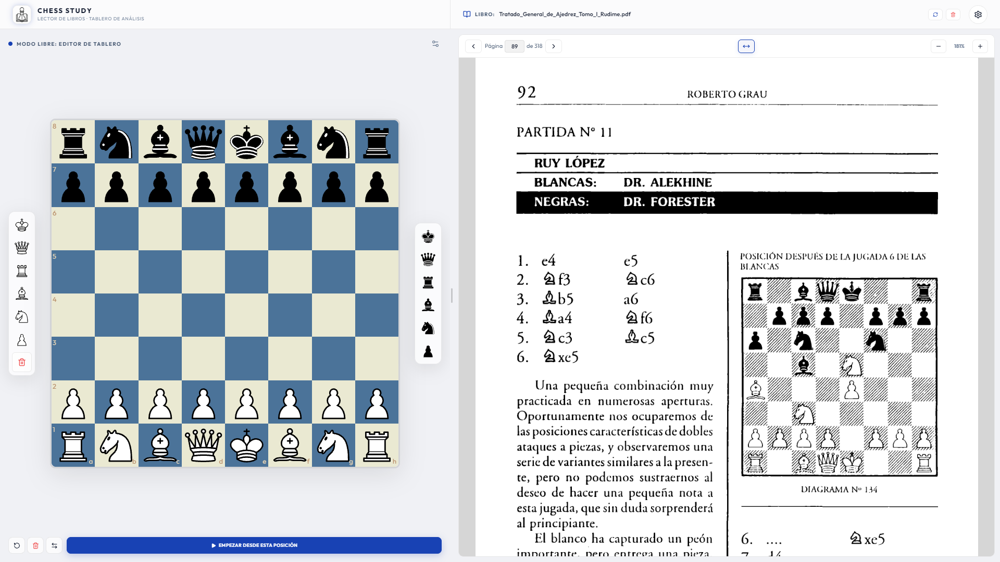
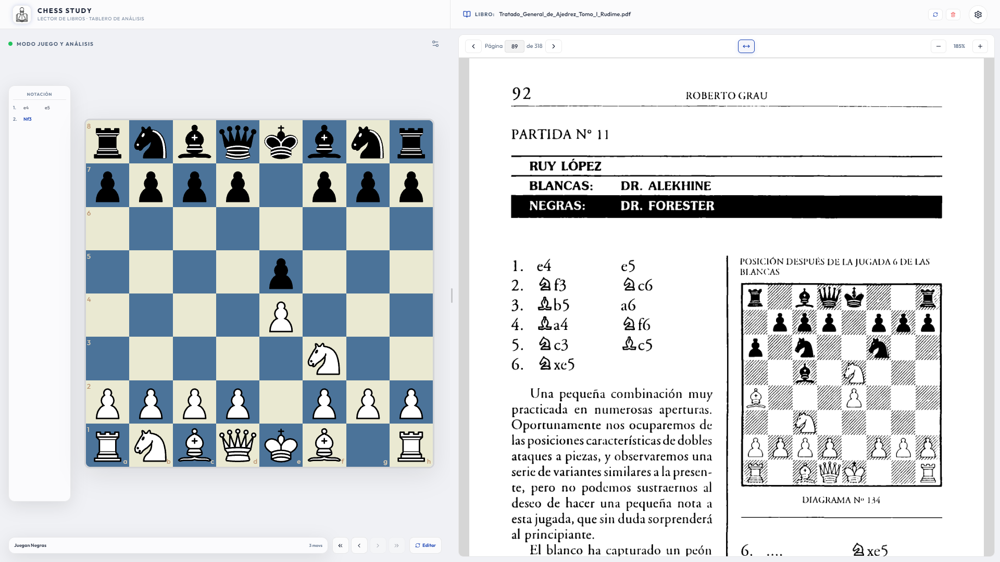
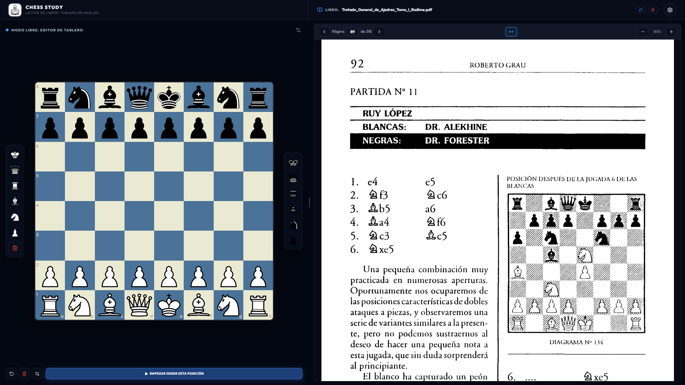

El entorno definitivo
para estudiar ajedrez.
Tablero interactivo + Visor PDF integrado
Tablero Ocean
Editor libre con paleta de piezas SVG
Visor PDF Nativo
Roberto Grau - Tomo I, Diagrama N° 134
Un clic para analizar
Juega desde cualquier posición del tablero

▶ MODO JUEGO ACTIVADO

CHESS STUDY
Lector de Libros & Tablero de Análisis
chessstudy.vercel.app